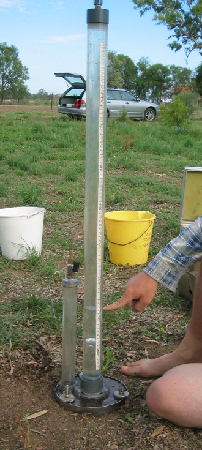
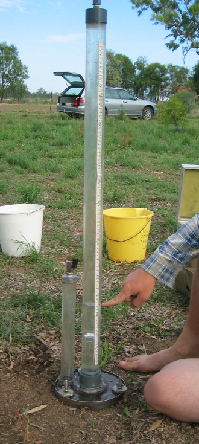
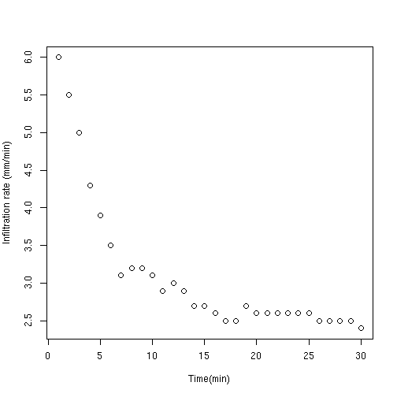
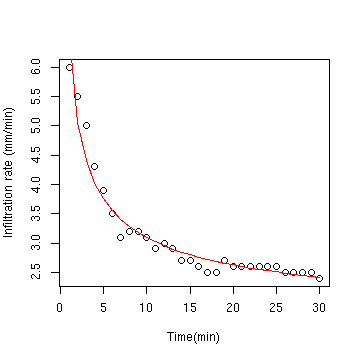

Water infiltration capacity is a key parameter in hydrology. It can be measured with a so called minidisc infiltrometer.
Paco Alonso
Coursera student

Water infiltration capacity is a key parameter in hydrology. It can be measured with a so called minidisc infiltrometer.

 \(i(t)=\frac{1}{2 \cdot S \cdot \sqrt{t}} + K\)
Philip's infiltration model:
\(i(t)=\frac{1}{2 \cdot S \cdot \sqrt{t}} + K\)
can be linearized with a very easy transformation:
resulting in:
\(Y=A \cdot X + B\)
t=1:30
i=c(6,5.5,5,4.3,3.9,3.5,3.1,3.2,3.2,3.1,2.9,3,2.9,2.7,2.7,2.6,2.5,2.5,
2.7,2.6,2.6,2.6,2.6,2.6,2.6,2.5,2.5,2.5,2.5,2.4)
model=lm(i~{1/sqrt(t)})
S=1/(2*model$coefficients[2]);K=model$coefficients[1]
plot(t,i,xlab="Time (min)",ylab="Infiltration (mm/min)");lines(t,1/(2*S*sqrt(t))+K,
col="red")
